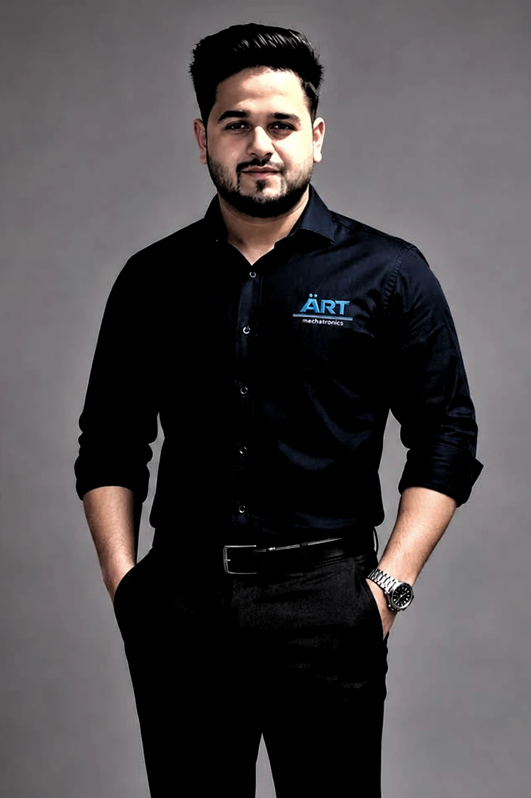
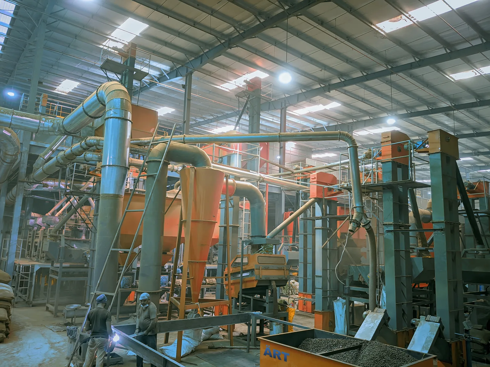
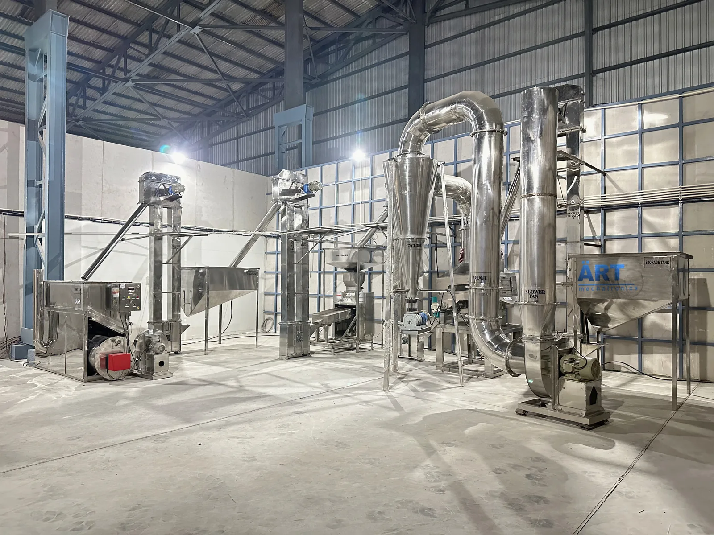
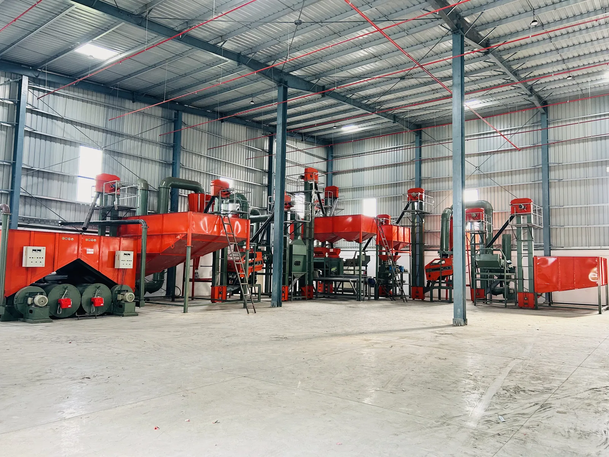
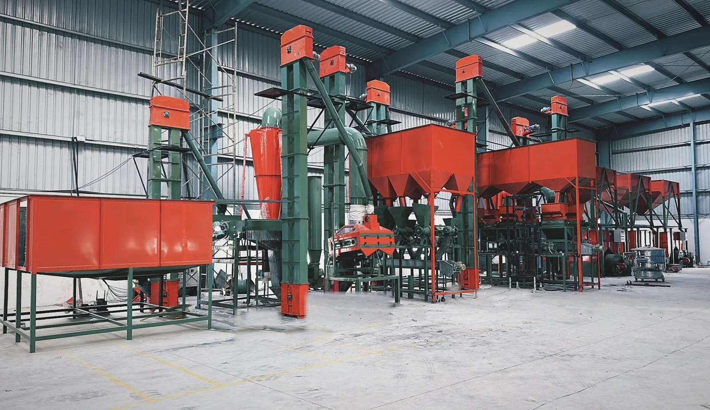
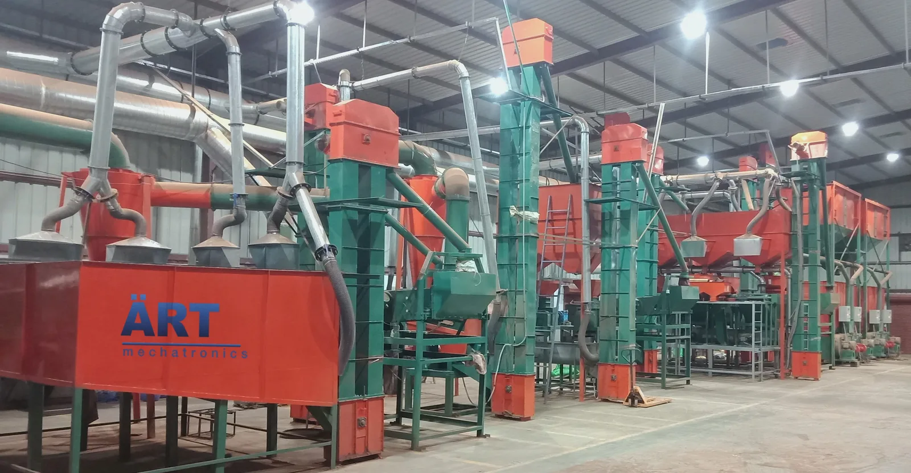
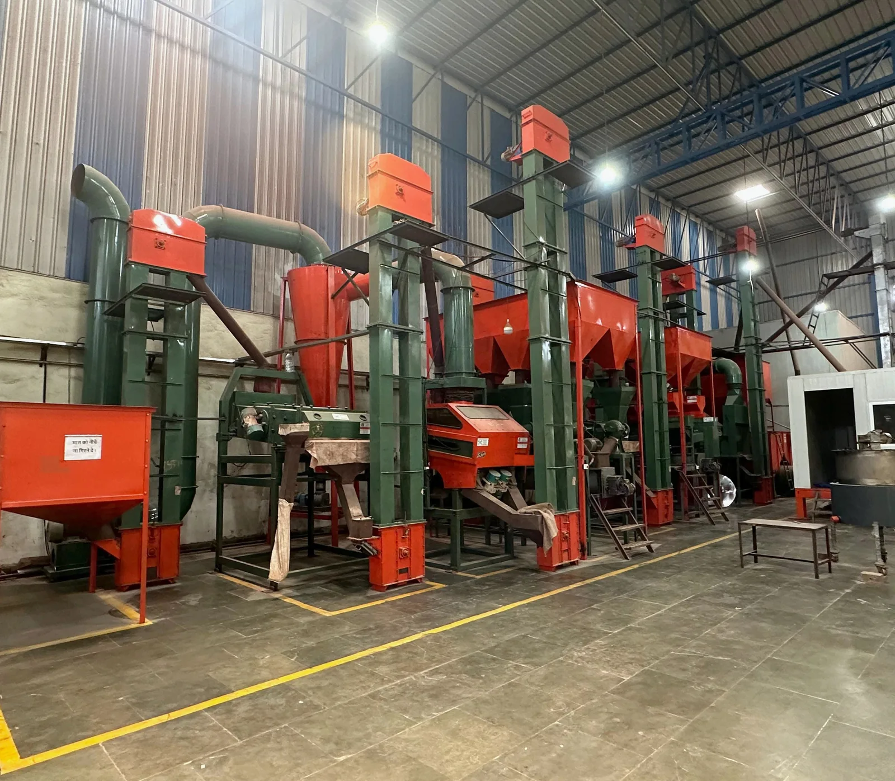

Modern automation, built on manufacturing experience
ART Mechatronics brings next-generation machinery and controls to a manufacturing lineage built through Thermocare since 1997. One team takes responsibility from the first process study to the first production batch.
Mechanical, electrical and controls as one discipline
The name says it: mechatronics is where mechanical engineering, electronics and software controls meet. That is exactly how we build. A single ART line combines precision stainless fabrication, pneumatic and drive systems, sensors and load cells, and PLC + HMI automation into one coordinated machine.
We focus on automatic powder handling: pneumatic conveying, storage and weighing, accurate batching and dosing, uniform mixing, sieving and dust-contained collection. Every unit is engineered to stand alone or connect into a fully automatic line.
Because design, manufacturing and integration happen together, we can control quality, timelines and the way each element fits the next. The result can be customised around the product, capacity and hygiene requirements.
One partner, from design to start-up
Our turnkey approach means you deal with a single team across every stage of the project.
Design
Process & mechanical design tailored to your product and capacity.
Manufacture
In-house stainless fabrication, drives, panels and assembly.
Install
Delivery and mechanical / electrical installation on site.
Commission
Integration, PLC programming, tuning and testing.
Start-up
Trial batches, operator handover and production support.

A message from Anurag Tiwari
At ART Mechatronics, we believe industrial automation should be reliable, intelligent, efficient, and built to last. ART stands for Anurag Rajeev Tiwari, representing the shared vision of my father and me. The word “Art” itself symbolises skill, craftsmanship and mastery — qualities that are essential in engineering and technology.
We founded ART Mechatronics with a mission to bring the world’s latest and most advanced industrial machinery and automation solutions to manufacturers, enabling them to achieve higher productivity, better quality and greater efficiency.
My personal commitment to every customer is simple: whenever someone invests in an ART machine or solution, they should receive far more value than they expected. We constantly strive to deliver superior quality, cutting-edge technology and dependable performance that not only meets expectations but consistently exceeds them.
For us, every project is more than a business transaction — it is the beginning of a long-term partnership built on trust, innovation and customer success.
One team, one purpose
At ART Mechatronics, our greatest strength is our people. More than 150 dedicated engineers, technicians and professionals work together as one family with a shared purpose — to build the best possible products and ensure complete customer satisfaction. From understanding production requirements and designing customised solutions to manufacturing, installation and after-sales support, every member of our team is committed to delivering excellence.
Being rooted in Indian values, we believe that “Customer is God” (Atithi Devo Bhava). This philosophy guides everything we do. We deeply value the trust our customers place in us, because it is their confidence in ART that supports the livelihoods of our entire team and their families. Every machine we build reflects our gratitude, responsibility and commitment to serving our customers with honesty, quality and dedication.
- 150+Engineers, technicians and professionals across the group
- 14Service locations across India, the UAE and Thailand

Our manufacturing team, Kanpur
Every ART machine is built by these people.
Our lines, in customer plants
Installed, commissioned and running. We do not publish our customers’ names, so these are shown without captions.






Why customers build with ART
30+ years of experience, expertise and excellence in the industry.
20,000+ successful equipment installations worldwide.
150+ employees sincerely dedicated towards customer satisfaction.
200,000+ sq ft of manufacturing and production area, with complete in-house production of equipment.
Served 30+ nations globally — operating successfully in multiple industries across the globe.
Customization & flexibility — tailor-made solutions built to each customer's specific operational requirements.
Sustainability & energy efficiency — machines designed to reduce operating costs and environmental impact.
One-stop solution provider — design, manufacturing, installation and maintenance under one roof.
Competitive pricing — high-quality machines at cost-effective prices, making automation accessible.
Continuous innovation — our R&D team keeps improving product efficiency, durability and automation.
Trusted by leading industries — food processing, chemical, pharmaceutical and packaging businesses run ART machines daily.
Industry leadership & legacy — over 30 years in the industrial machinery sector as a trusted name.
Cutting-edge technology — state-of-the-art design for superior efficiency, durability and precision.
Robust after-sales support — a dedicated service team across multiple locations, on-site and remote.
Let's build your line
See the system run, take control of a virtual panel, or talk to us about your process.